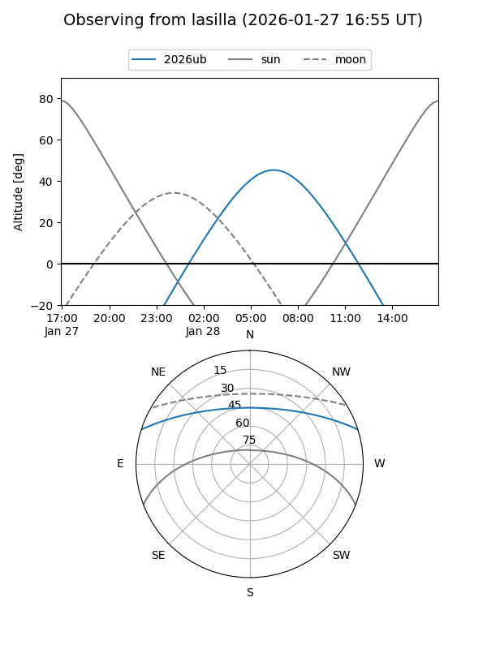
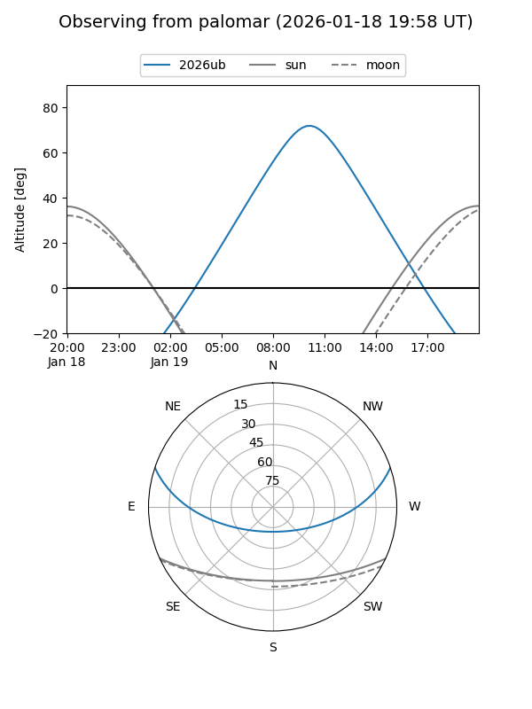
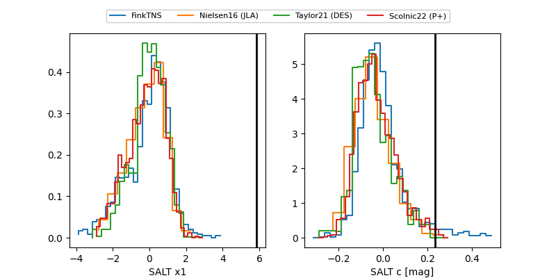

2026ub
Target 2026ub at 2026-01-23 05:56
Aliases and brokers:
FINK: link
Lasair: link
ALeRCE: link
TNS: link
YSE: link
alt names
ZTF26aaakprj (ztf,fink_ztf)
2026ub (tns,yse)
ATLAS26akm (atlas)
Coordinates:
equatorial (ra, dec) = 153.2609,+15.46601
equatorial (HMS+DMS) = 10:13:02.63,+15:27:57.64
galactic (l, b) = (222.2952,+51.49240)
Flags:
Photometry:
last ztfg=20.37, ztfr=20.47
1 ztfg, 3 ztfr detections
Lightcurve

Visibility


Additional plots
